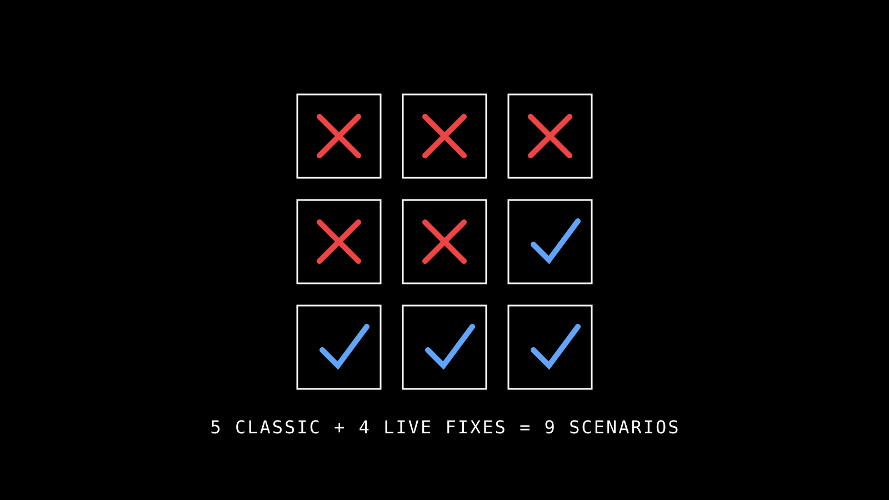
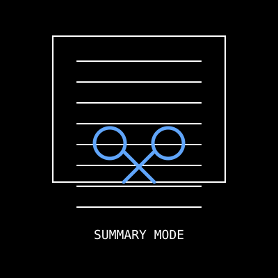
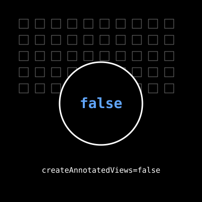
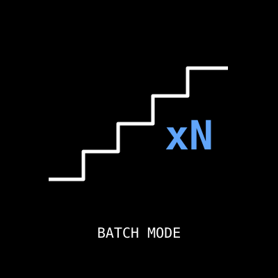
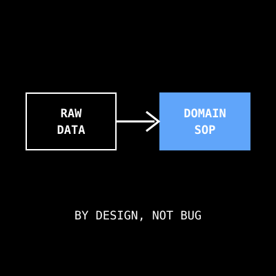

本頁綜合 CLAUDE.md troubleshooting 表與 commit 4975ceb 的 4 個工具修復。5/18 demo 暴露的不是單純 bug list——它們也是「Tool Call Data Honesty」與「Domain Method Compliance」邊界的活體實證。先看下方診斷流程決定該翻哪節。

大多數「壞了」其實是三類問題之一。先分清屬於哪類，再翻對應節。
Revit ribbon 沒看到 RevitMCP panel？build 失敗或找不到 dll？看 Section 02 第 1-2 項。
| Symptom | Root cause | Fix |
|---|---|---|
| Build 出現 56 warnings | Revit 2024 使用 2022-compatible syntax 時的正常警告 | 確認無 error 即可。不影響功能。 |
RevitMCP.dll not found |
Build config 拼錯或 output 路徑改了 | 使用 dotnet build -c Release.R{YY} RevitMCP.csproj，YY ∈ {22,23,24,25,26}。Output 在 bin/Release.R{YY}/RevitMCP.dll。 |
| MCP Server connection failed | (a) npm run build 沒跑 / (b) AI client 設定路徑錯 / (c) port 被佔 |
(a) cd MCP-Server && npm run build(b) 檢查 client config 是絕對路徑指向 build/index.js(c) 跑 scripts/release-port.ps1 |
Port 8964 被 PID 4（System）佔用 |
Revit 異常關閉後 HTTP.sys 留下孤兒 Request Queue | 執行 scripts\release-port.ps1（需 Admin）。或手動：net stop http /y && net start http |
| Commands 送出去沒回應 | Revit UI thread 被卡（沒走 ExternalEventManager） | 確認所有 Revit API 呼叫都包進 ExternalEventManager.Instance.PostCommand()。看 %AppData%\RevitMCP\Logs\RevitMCP_YYYYMMDD.log 確認 ExternalEvent 是否被觸發。 |
RevitMCP.2024.csproj 這類版本專用 project.addin.addin hardcode 絕對 DLL 路徑AddInId（會被 Revit 視為兩個不同 plugin 載入兩次）<DeployAddin>true</DeployAddin>（Nice3point SDK 會產生 RevitMCP.{version}.addin 與手動的 RevitMCP.addin 衝突）5/18 demo 實機跑 5 個工具暴露 5 種典型 MCP 工具邊界樣態（output 過大 / API 不對稱 / 工具設計差異 / 真實 bug / 只回 raw data）。這個歷程本身是 P15「排程死線」 + 第二憲法 Data Honesty 的活體實證。
check_exterior_wall_openings · 輸出超限
對一整層樓跑外牆開口檢查，工具回傳 JSON 過大（每個 opening 都帶完整 geometry），AI 端 context window 被吃光，後續無法繼續對話。
原預設輸出 verbose mode，每個 opening 帶 BoundingBox + Solid geometry + 鄰地距離計算中間值。對 UI 顯示有用，對 AI context 是噪音。
新增 summary 模式（預設）：每個 opening 只回 ID + Wall reference + 鄰地距離 + PASS/FAIL。若需細節再傳 detail=true。
所有可能回大量 elements 的工具都應該預設 summary、選配 detail。這是「工具設計差異」型別。
check_smoke_exhaust_windows · 80+ 視圖污染
對整個專案跑排煙檢查，工具自動建立 80+ 個 annotated views（每個居室一個剖面圖）。專案視圖樹爆炸，用戶手動刪 30 分鐘。
原本想做 demo 視覺效果——「每個居室都附剖面與標註」。實務上大多數情境只想要 PASS/FAIL 列表，不想視圖。
把 createAnnotatedViews 預設改為 false。需要視圖才主動傳 true。批次工作流請顯式指定 viewId 不要靠 active view。
「會修改模型」的副作用必須 opt-in 不能 opt-out。這是「真實 bug + 工具設計」混合型別。
check_stair_headroom · 不支援 batch
整層樓有 5 個樓梯需要檢查淨高。工具一次只能檢一個 stair element，AI 連續呼叫 5 次造成 round-trip 延遲與容易超時。
初版設計時只想到「點選一個樓梯檢查」，沒考慮整層批次需求。API 不對稱——其他類似 check_* 工具都支援 batch。
新增 stairIds 陣列參數（可選），傳入則批次處理。原本單一 stairId 參數仍保留向後相容。
新工具的 API 預設要考慮「同類元素批次」需求。這是「API 不對稱」型別。
get_room_daylight_info · 只回 raw data
使用者期待工具直接回 PASS/FAIL「採光達標」，實際只回 raw data（窗 ID、面積、台度高度等），需要再套公式才知道結果。
這是 spec by design 不是 bug——PASS/FAIL 屬於 第三憲法 Domain Method Compliance 的範疇，由 domain/daylight-area-check.md 規定（含 75cm 台度扣除、外牆門納入等規則），不應該寫死在工具裡。法規修訂時改 domain 一份，工具不動。
不改工具，改練習頁說明。Step 4 改用 level='1FL' + 提示要手動套 75cm 公式，並連到 domain 完整 SOP。
Tool 回 raw data，PASS/FAIL 留給 domain SOP。這是 MCP 架構的核心紀律，違反會導致「法規一改要改 N 個工具」。這是「只回 raw data」型別。
%AppData%\RevitMCP\Logs\RevitMCP_YYYYMMDD.log
看 ExternalEvent 是否觸發、CommandExecutor 是否收到指令、有無 exception。
stdout / stderr — Claude Desktop 看 ~/Library/Logs/Claude/mcp*.log（Mac）或 %AppData%\Claude\logs\mcp*.log（Win）
看 WebSocket 連線是否建立、tool schema 是否載入。
log/YYYY-MM.md
保存 AI session 摘要、commit 對應、手動紀錄。看「最近發生什麼」。
git log --stat -5 或 git show 4975ceb
看最近 commit 改了什麼。比 log/ 還即時。
get_project_info smoke test）